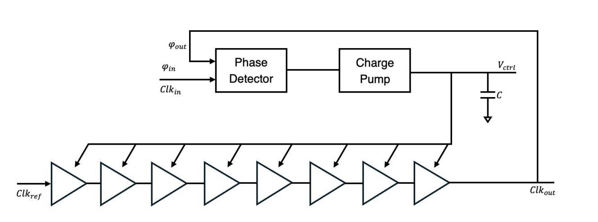
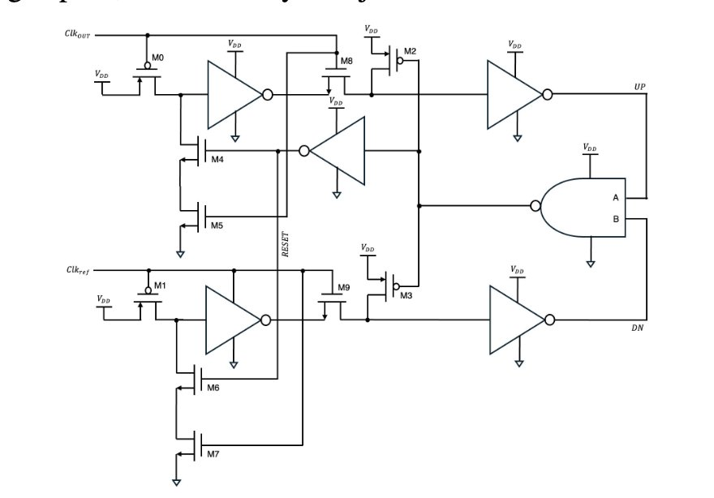
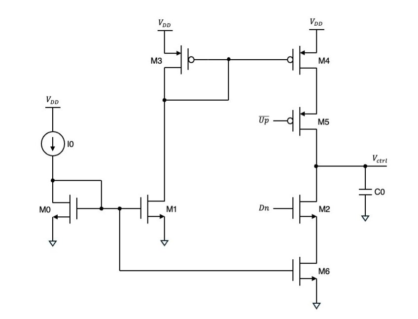
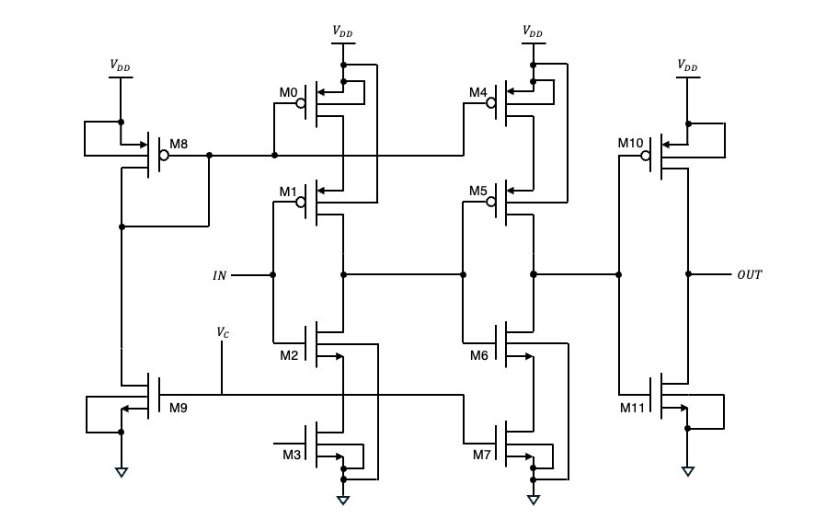
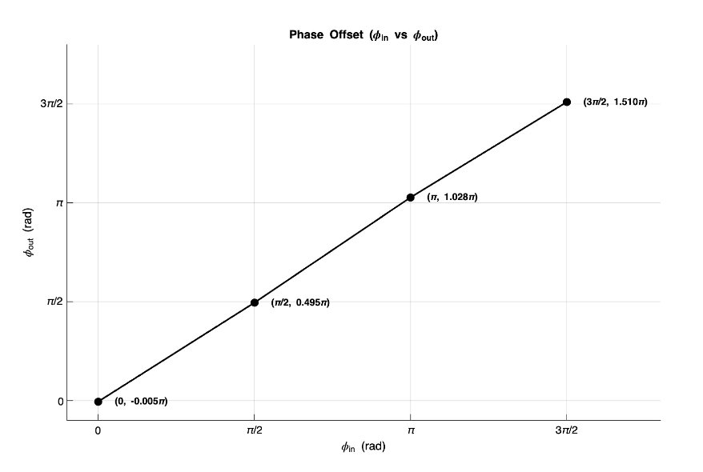
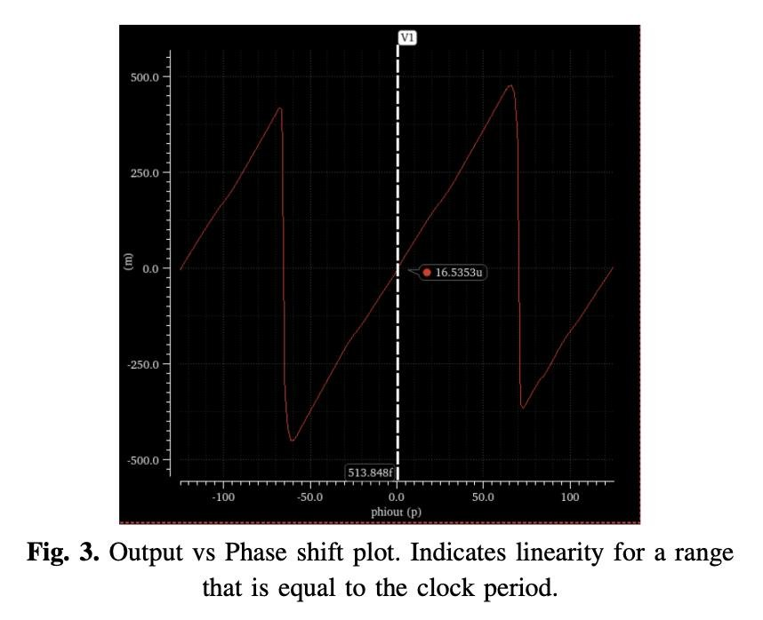
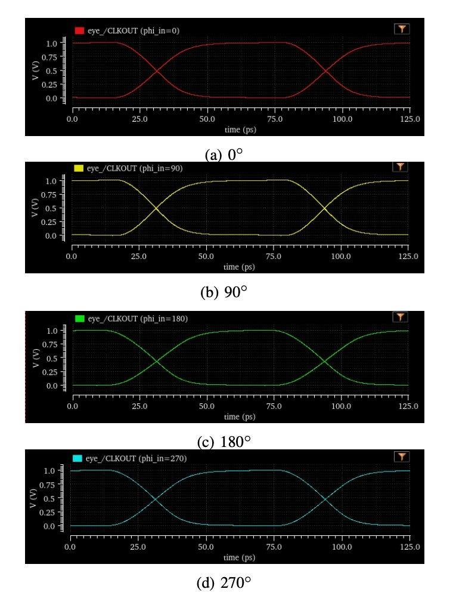
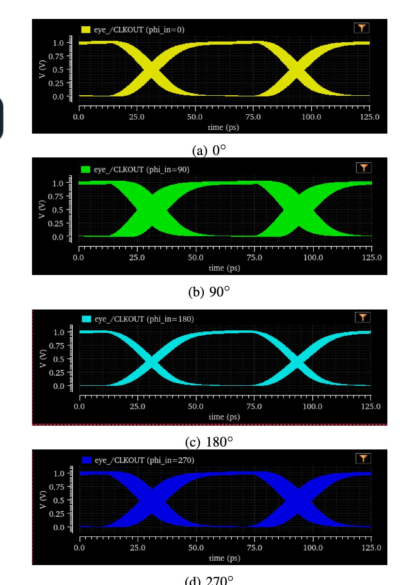
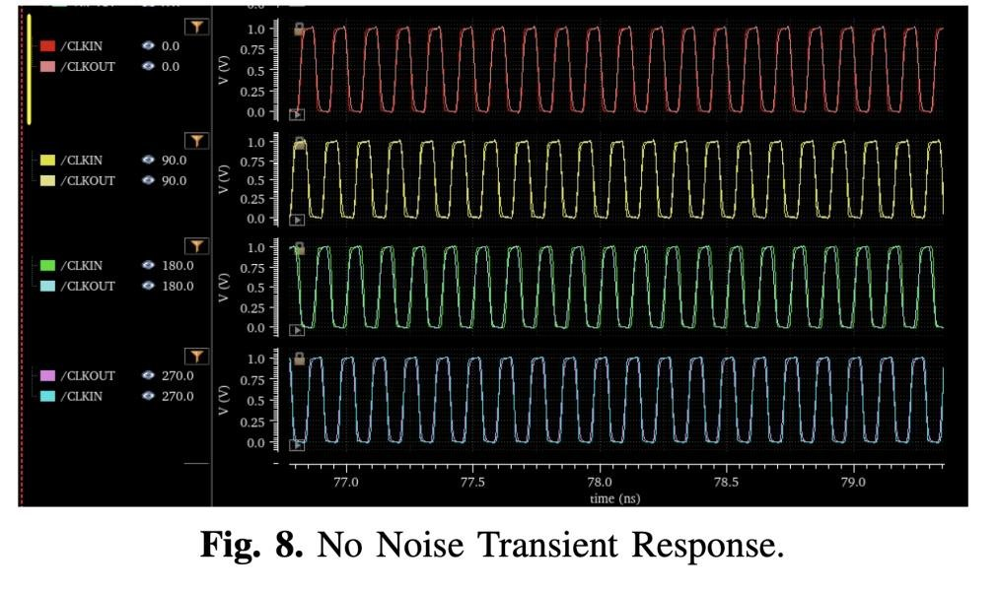
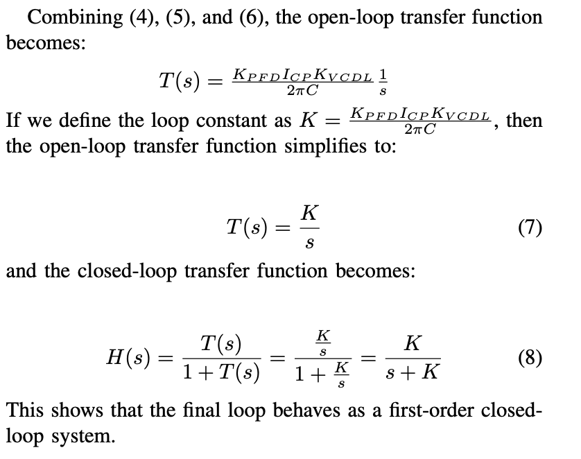

Low-power, low-jitter 8 GHz delay-locked loop
A complete DLL — phase-frequency detector, charge pump, loop filter, and voltage-controlled delay line — with every device sized by hand for lock range, static phase offset, and jitter. Awarded Best DLL Project in EE 124 for class-best power, static phase offset, and jitter.
Architecture
A DLL locks the delay through a chain to exactly one clock period, which gives you precisely spaced output phases — useful for clock distribution and high-speed links, and unlike a PLL it can't accumulate phase error because there's no oscillator in the loop. This design produces four phases (0°, 90°, 180°, 270°) at 8 GHz.

Phase-frequency detector. A pass-transistor DFF-based PFD compares the reference clock against the delay-line output and emits UP/DN pulses. A reset path resolves the dead zone, which is what keeps static phase offset low near lock.
Charge pump and loop filter. The charge pump converts UP/DN pulses into a control voltage Vctrl. Pump current and filter capacitance were sized together for lock within 5 ns with enough phase margin not to ring, and the mirrored biasing keeps charge and discharge paths symmetric so the loop doesn't settle to a false offset.
Voltage-controlled delay line. Eight cascaded current-starved inverter cells, delay tuned by Vctrl. A non-starved output buffer restores a near-square wave, and mirrored starvation biasing keeps duty-cycle distortion under 1%.



Results
The loop locks within 5 ns for all four required input phases, under both clean and noisy supply and input conditions. Maximum static phase offset is 1.36% of a clock period, and the phase transfer characteristic is linear across the full 2π range.


| Parameter | Target | Clean | Injected noise |
|---|---|---|---|
| Peak-to-peak jitter | < 25 ps | < 1.2 ps | < 12.5 ps |
| RMS jitter | — | 16.1 fs | 3.26 ps |
| Duty-cycle distortion | < 5% | < 1% | < 1% |
| Power consumption | < 8 mW | < 3.8 mW | < 3.8 mW |
| Output voltage swing | > 0.7 V | 1 V | 1 V |
| Lock time | — | < 5 ns | < 5 ns |



Loop analysis

References
- B. Razavi, “The Delay-Locked Loop [A Circuit for All Seasons],” IEEE Solid-State Circuits Magazine, vol. 10, no. 3, pp. 9–15, Summer 2018.
- A. Rezaeian, G. Ardeshir, and M. Gholami, “A Low-Power and High-Frequency Phase Frequency Detector for a 3.33-GHz Delay Locked Loop,” Circuits, Systems, and Signal Processing, vol. 39, no. 4, pp. 1735–1750, 2019.
- M. Mansuri, D. Liu, and C.-K. Yang, “Fast frequency acquisition phase-frequency detectors for Gsamples/s phase-locked loops,” IEEE JSSC, vol. 37, no. 10, pp. 1331–1334, Oct. 2002.
- C.-K. Yang, “Delay-Locked Loops — An Overview,” in Phase-locking in High-Performance Systems. IEEE Press, 2003, pp. 13–22.